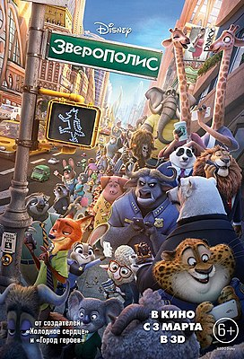
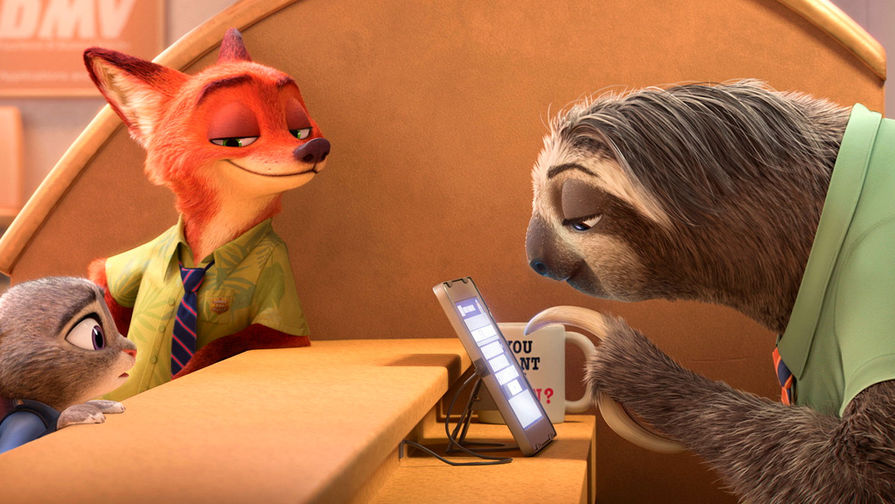

Зверополис(2016)
«Зверополис» (англ. Zootopia) — американский компьютерно-анимационный комедийно-приключенческий фильм в формате 3D производства Walt Disney Pictures. Слоган: «Добро пожаловать в городские джунгли»
.
«Зверополис» был выпущен в обычном 2D, Disney Digital 3D, RealD 3D и IMAX 3D форматах 4 марта 2016 года. Одобрение критиков заслужили анимация, озвучивание и сценарий, а также освещение в фильме актуальных тем предрассудков и стереотипов. Мультфильм имеет рекордный кассовый успех в ряде стран. Также является 25-м фильмом, преодолевшим рубеж в $1 млрд.
«Зверополис» был создан режиссёрами Байроном Ховардом и Ричем Муром, сорежиссёром Джаредом Бушем. Фильм рассказывает о Зверополисе — современном городе, населённом самыми разными животными, от огромных слонов до крошечных землероек. Зверополис разделён на районы, полностью повторяющие естественную среду обитания разных жителей — здесь есть и элитный район Сахара-сити, и неприветливый Тундратаун. В этом городе появляется новая сотрудница полиции, милая крольчиха Джуди Хопс, которая с первых дней работы понимает, как сложно быть маленькой и пушистой среди больших и сильных полицейских. Джуди берётся за первую же возможность проявить себя, несмотря на то, что её партнёром будет хитрый лис-аферист Ник Уайлд. Вдвоём им предстоит раскрыть сложное дело о пропавших животных.
СМОТРЕТЬ ТРЕЙЛЕР СМОТРЕТЬ МУЛЬТФИЛЬМ